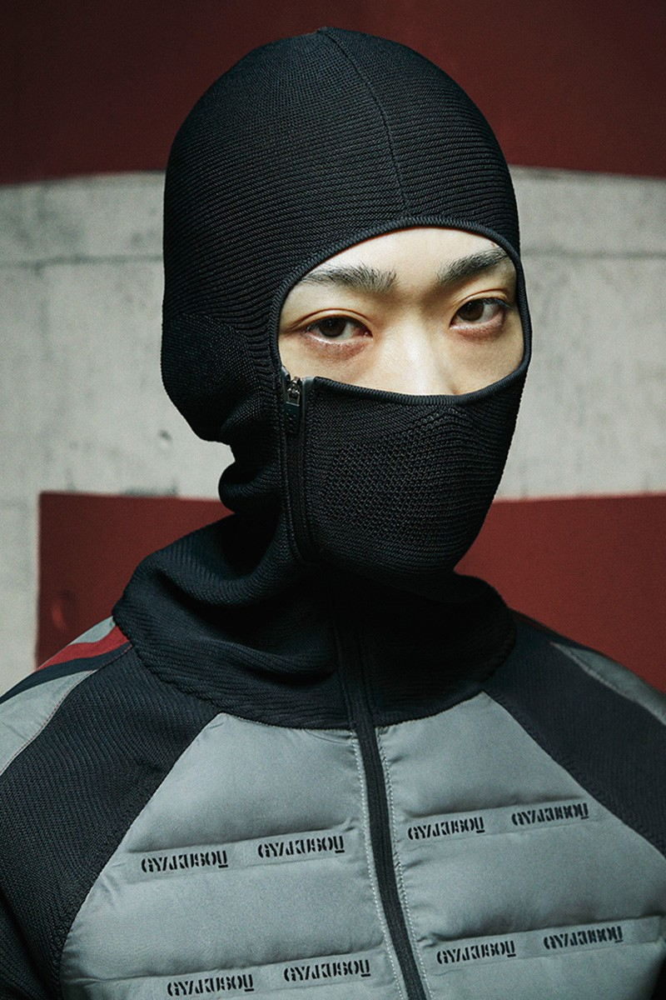
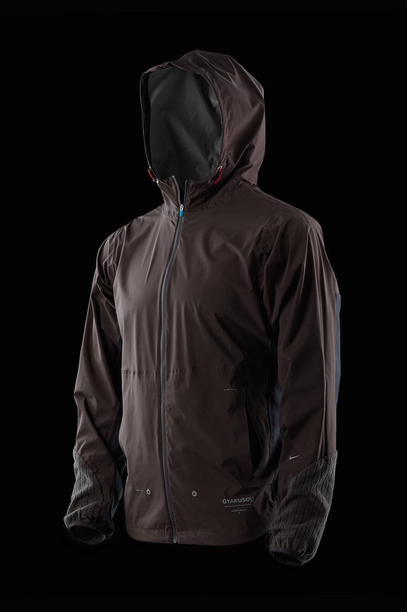
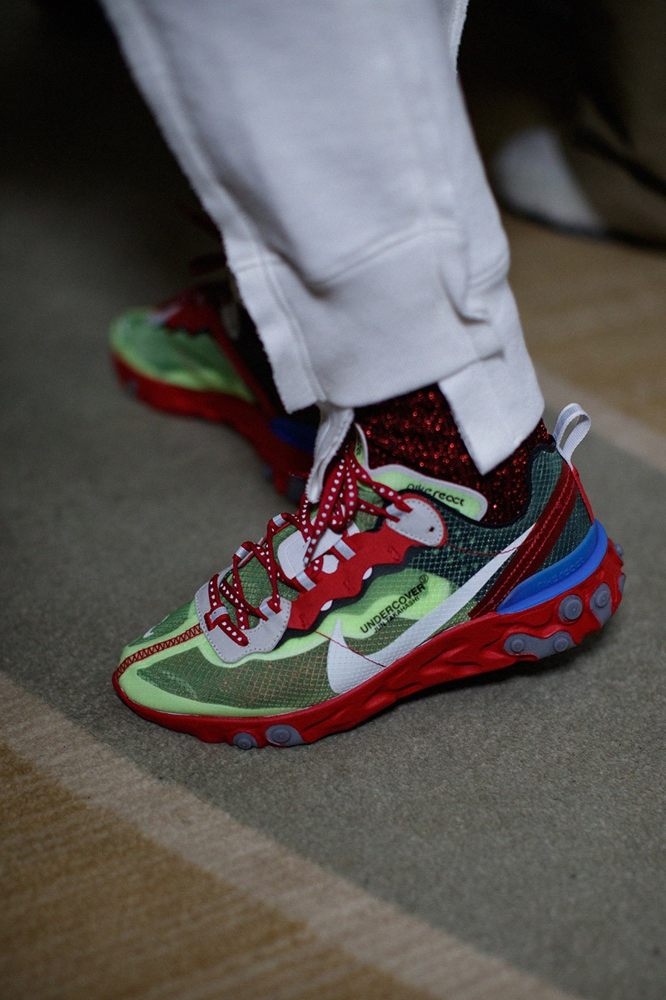

Activewear for Rebels
NikeLab Gyakusou Shield Jacket, 2017
In 2010, Undercover teamed up with Nike to create the Gyakusou active wear line. Takahashi took inspiration from the Tokyo Gyakusou International Running Association and created modern clothing that performed just as good as it looked. This collaborative effort follows a trend that has occurred in the past decade, where the line between sportwear and streetwear become blurred. Aside from the loyal die-hard running fans of Gyakusou, as the project has evolved over the past decade, Undercover has accumulated a number of fans interested in the design and aesthetic of the sportswear.
Nike Gyakusou Running Jacket, 2010
The Gyakusou line lets Takahashi’s love for unconventional fabrics and construction methods shine through the resources of Nike. Early running jackets and pants utilized the now outdated Nike Hyperfuse technology, which provided an alternative method for joining textiles together. Additionally, Gyakusou is partly responsible for the death of the vomit-inducing neon green running equipment of the late 2000s. Color pallets for Gyakusou gear consisted of greys, blacks, and the occasional muted yellow or red.
Undercover Nike React Element 87, 2018
Within the past year, the line has gained further attention through the success of the Nike React Element 87. Originally released by Nike alone in March of 2018, Undercover put their spin on the silhouette for FW18 at Paris Fashion Week (Greenwood). The design is in accordance with the ‘dad’ shoe trend led by the Balenciaga Triple S in late 2017.
Back to Top